Artes por Valor
9/36 novas cenas · mais as 3 do lote inicial · avaliação visual e integração em andamento
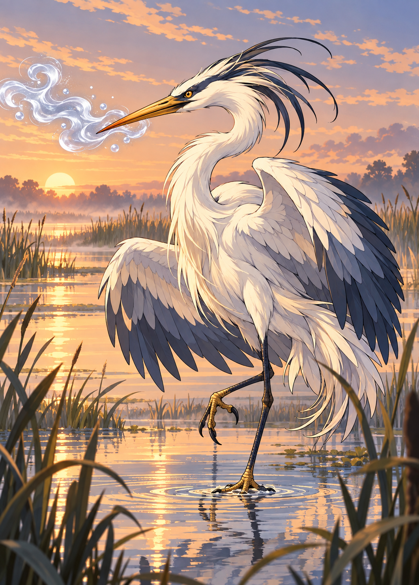
Garça-de-Neblina
sublimeyn · prov-sublimeyn-etereo-c2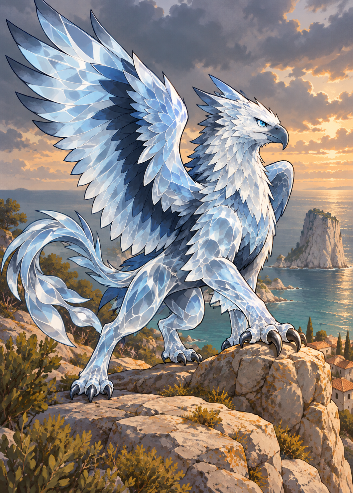
Grifo-de-Vidro
sublimeyn · prov-sublimeyn-etereo-c3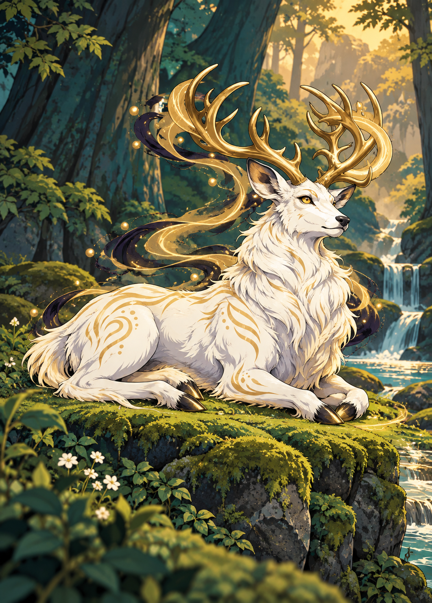
Cervo Branco
alvorum · prov-alvorum-anjo-c6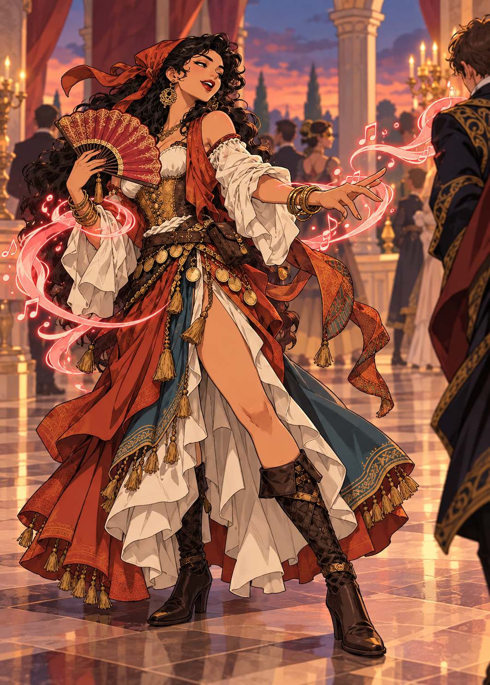
Encantadora de Salão
persona · prov-persona-espiao-c4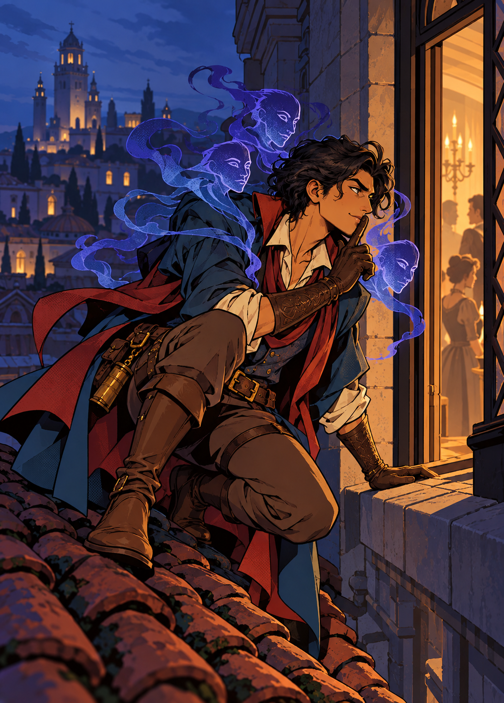
Espião da Coroa
cognitium · prov-cognitium-espiao-c4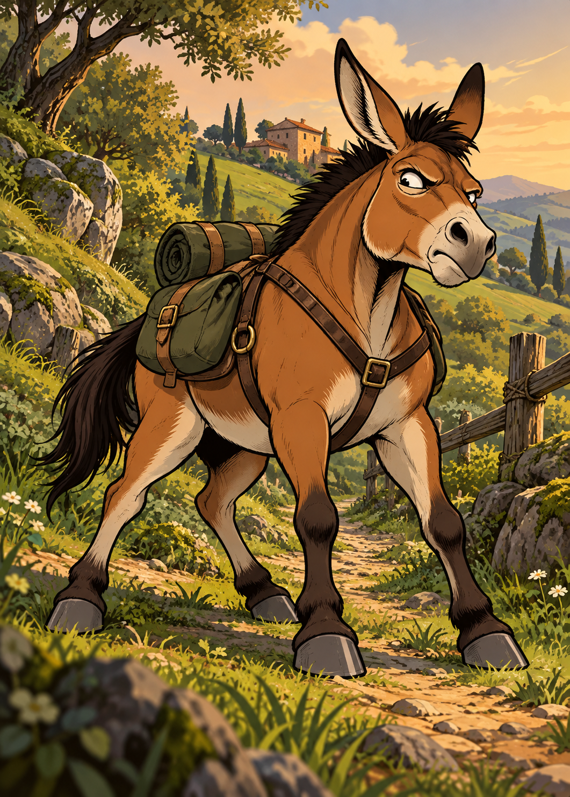
Mula Teimosa
primitivum · prov-primitivum-aliado-c2-defensivo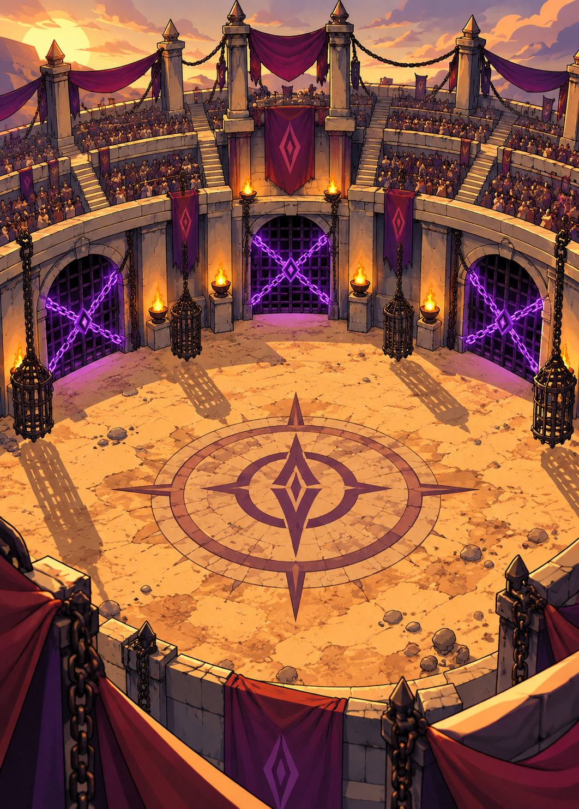
Arena de Kairvahnn
dominum · prov-dominum-cerco-c3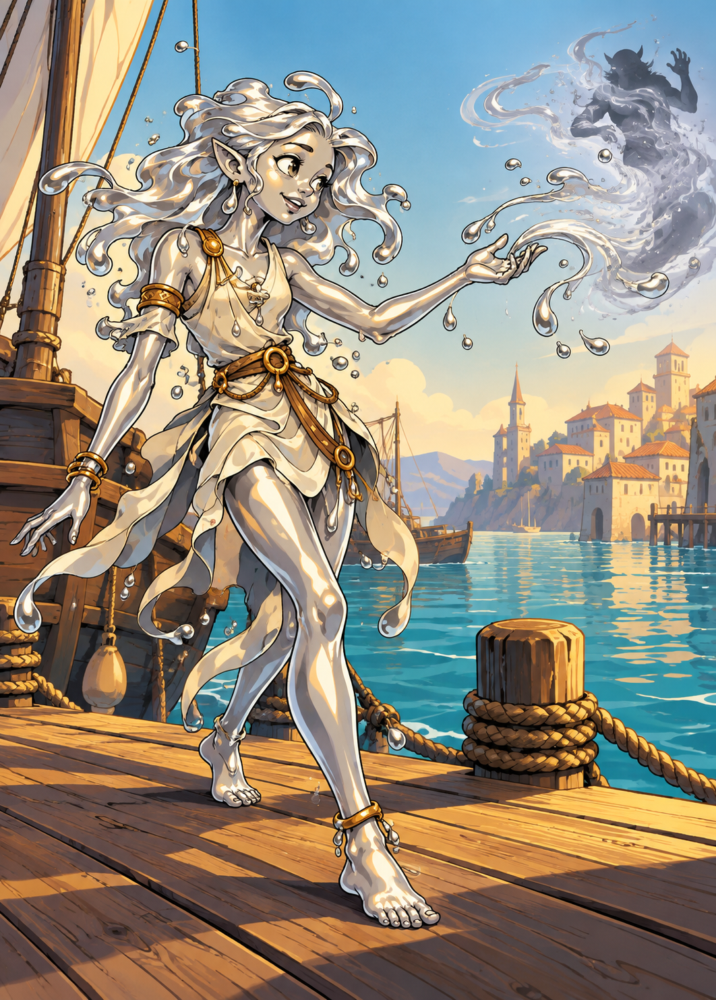
Menina de Pele de Mercúrio
sublimeyn · prov-sublimeyn-devolver-c2-repentina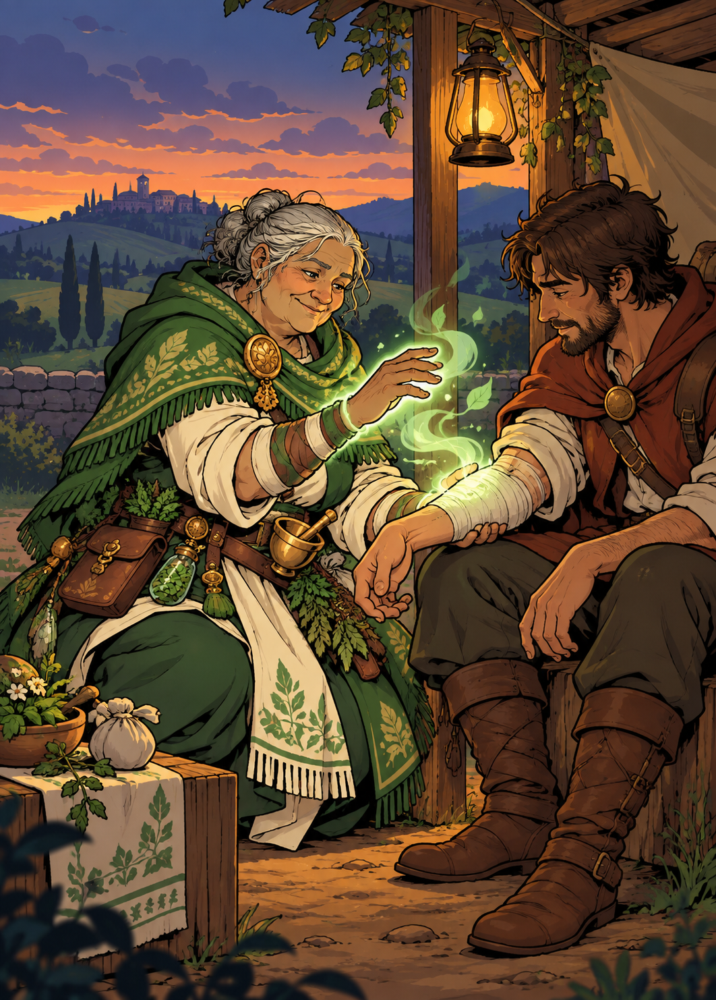
Curandeira de Beira de Estrada
morbidyum · prov-morbidyum-curar-c2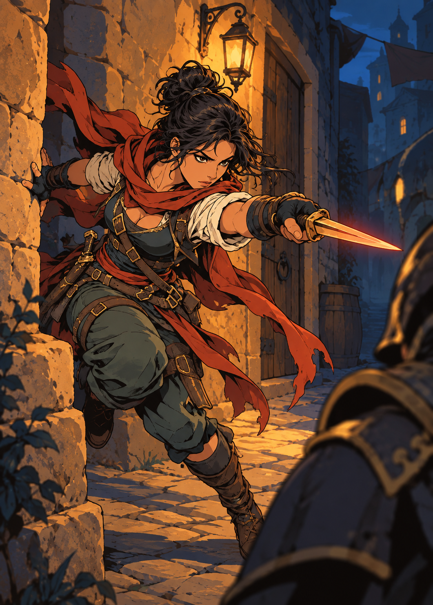
Assassina Paga
conflituo · prov-conflituo-dano-c2-repentina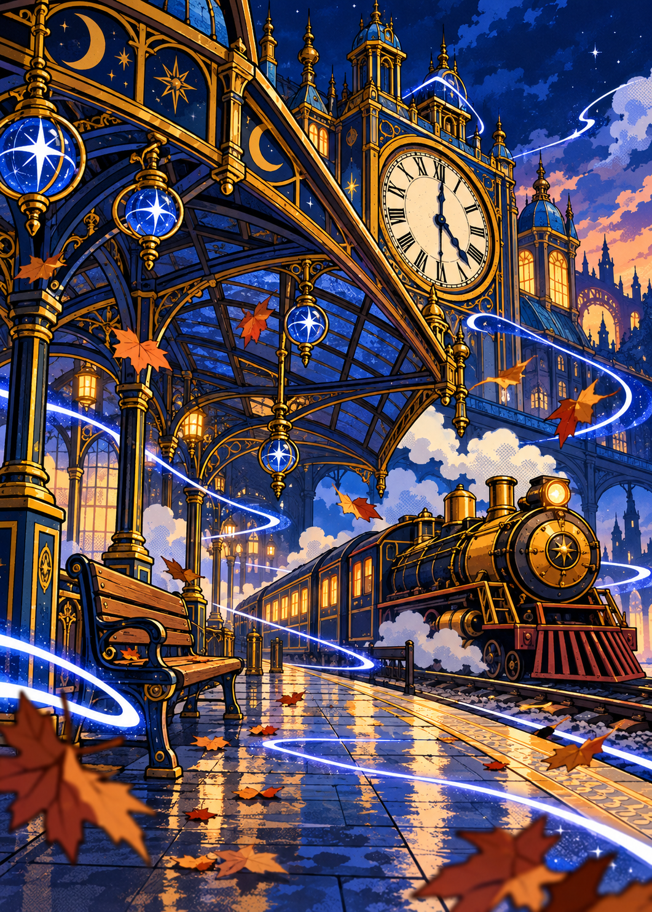
Estação Parada
eternyr · prov-eternyr-varredura-c3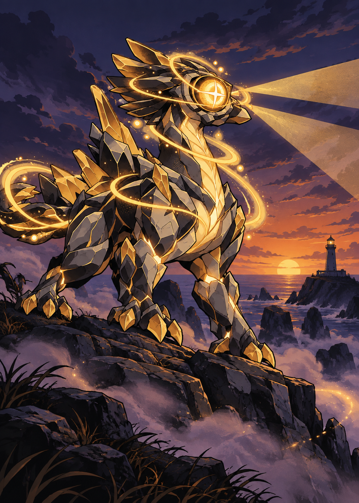
Olhos-de-Farol
alvorum · prov-alvorum-varredura-c3